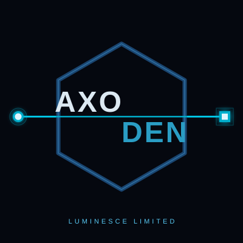

Evidence intake
- Immutable evidence intake.
- Deterministic CSV mapping.
- Field-level provenance.

Dossier Intelligence Initial commercial focusAxoDen application · Luminesce Limited
Dossier Intelligence connects suppliers and parts to qualification requirements and supporting documents. The intended value is a traceable basis for review, with less avoidable manual investigation.
Expert evaluation. Four subject-matter experts at a prospective defence and aerospace manufacturer are evaluating the MVP, as reported in October 2026. A contract and a formal pilot remain to be established.
The backend keeps source evidence, accepted records, review decisions and audit runs distinct, so a reviewer can inspect an accepted result and its provenance.
Consider an expired supplier document. It supported a qualification claim relevant to a part. That claim helped satisfy a requirement. A reviewer relied on its validity.
The useful question goes past the expired file: which claims and decisions depended on it, and does other current evidence still support them?
Current software provides evidence intake, provenance, review records, frozen audit runs and graph projections. Implementing and validating the automatic path from expiry to a revised decision is further work.
Pricing and repeatable customer value remain to be established. The next engagement should produce the evidence for those, inside an agreed trial.
Representative evidence, a trial sponsor, a purchasing decision-maker and acceptance criteria.
Review quality, reviewer effort, traceability, failure cases and integration needs.
Whether the trial establishes a basis for paid use.